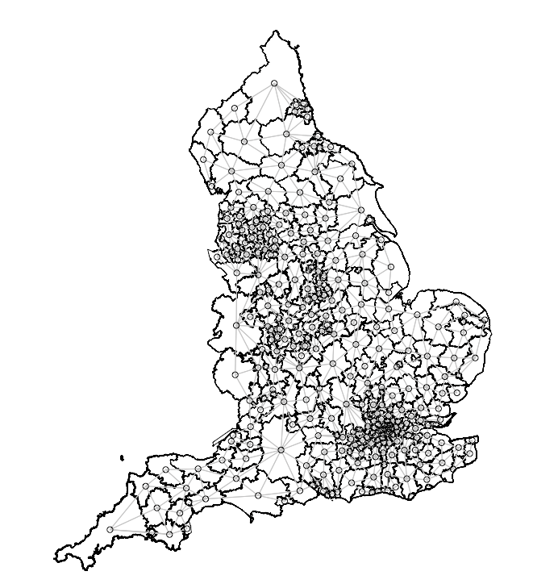
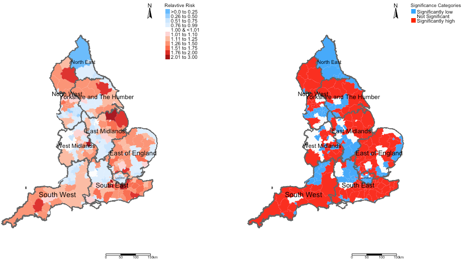
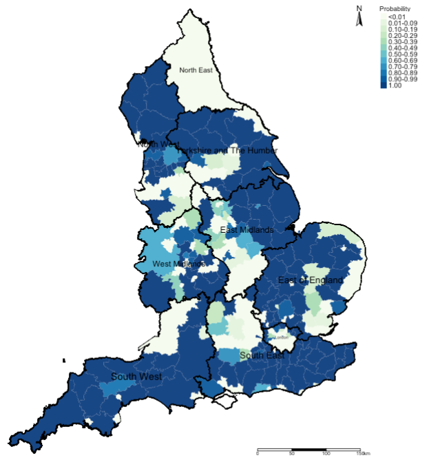

6 Bayesian Spatial Modelling for Areal Data in Stan
6.1 Lecture recording (Length: 40:58 minutes)
Important Notes: If this or any subsequent video don’t play from this website, then try playing it directly from Microsoft Streams - you should be able to view it by clicking this [LINK]. Access to Microsoft Steams to these videos will require use of your UCL institutional login details.
6.2 Introduction
This week’s practical you will be introduced to applying spatial Bayesian models for risk assessments for areal-level discrete outcomes. This a powerful tool used often in many applications e.g., spatial epidemiology, disaster risk reduction and environmental criminology and many more.
This exercise will focus on casualty data resulting from road accidents by car users (and/or occupants) in the UK. Road traffic accidents & injuries are a serious problem worldwide. In fact, it is one of the leading causes of death attributed to significant life-years lost and as a consequence is associated with considerable economic losses to impacted individuals and families. There are many individual, environmental and geographical risk factors for road-related casualties. Here, we will use a series of spatial models from a Bayesian framework to estimate the area-specific relative risks (RR) of casualties due to road accidents in local authority areas across the England; and we will quantify the levels of uncertainty using a device called exceedance probabilities.
6.3 Learning outcomes
You will learn how to:
- Implement the Spatial intrinsic conditional autoregressive model (ICAR) to areal data in RStan;
- How to use the ICAR model to predict the area-specific relative risks (RR) for areal units and how to determine whether the levels of such risk are statistically significant or not through 95% credible intervals (95% CrI);
- How to determine the Exceedance Probability i.e., the probability that an area has an excess risk of an outcome that exceeds a given risk threshold (e.g., RR > 1 (null value));
You can follow the live walkthrough demonstration delivered in the first 1-hour of the practical, and then use the remaining half to try the practical tutorials and follow the instructions on your own.
6.4 Demonstration recording (Length: 51:46 minutes)
Important Notes: If this or any subsequent video don’t play from this website, then try playing it directly from Microsoft Streams - you should be able to view it by clicking this [LINK]. Access to Microsoft Steams to these videos will require use of your UCL institutional login details.
6.5 Before we start…
6.5.1 Loading and installing packages
We will need to install the following new packages:
SpatialEpi: grants access to functionexpected()to calculated expected numberstidybayes: grants access to further functions for managing posterior estimates. We will need it calculating the exceedance probabilities. Load this alongsidetidyversepackagegeostan: grants access to further functions that we need to compute the adjacency matrix that can be handled in Stan. We will use the two functionsshape2mat()andprep_icar_data()to create the adjacency matrix as nodes and edges.
Now, lets load all packages need specifically for this computer practical:
# Load the packages with library()
library("sf")
library("tmap")
library("spdep")
library("rstan")
library("geostan")
library("SpatialEpi")
library("tidybayes")
library("tidyverse")Upon loading the rstan package, we highly recommend using this code to configure it with RStudio:
This tells RStudio to use the multiple cores in your computer for parallel processing whenever Stan is being implemented. Every time you want to use Stan - make sure to load parallel::detectCores() and rstan_options code.
Important Notes: Make sure to be using the latest version of RStan (2.26.13). Check in your list of packages. If you are using the old version (i.e., 2.21.1) you may encounter problems with creating the functions in Stan script. It is recommended that you remove version 2.21.1 and install the latest development version 2.26.13. See why [LINK]
Instruction to do this are as follows:
6.5.2 Datasets & setting up the work directory
Go to your folder GEOG0125 and create a sub folder called “Week 8” within the GEOG0125 folder. Here, we will store all our R & Stan scripts as well as datasets. Set your work directory to Week 8’s folder.
For Windows, the code for setting the work directory will be:
For MAC, the code for setting the work directory will be:
The dataset for this practical are:
Road Casualties Data 2015-2020.csvEngland Local Authority Shapefile.shpEngland Regions Shapefile.shp
The dataset were going to start of with is the Road Casualties Data 2015-2020.csv. This data file contains the following information:
- It contains the 307 local authority areas that operate in England. The names and codes are defined under the columns
LAD21NMandLAD21CDrespectively; - It contains the following variables:
Population,CasualtiesandIMDScore. TheCasualtiesis the dependent variable, andIMDScoreis the independent variable. We will needPopulationcolumn to derive the expected number of road casualties to be used as an offset in the Bayesian model.
The shapefile England Local Authority Shapefile.shp contains the boundaries for all 307 local authorities in England. The England Regions Shapefile.shp contains the boundaries for all 10 regions that make up England.
Let us load these dataset to memory:
6.6 Data preparation in RStudio
6.6.1 Calculation for expected numbers
In order to estimate the risk of casualties due to road accidents at an LA-level in England, we will need to first obtain a column that contains estimates from expected number of road casualties. This is derived from the Population column which as denominators or reference population size which is multiplied to the overall incidence rates of road accidents to get the number of expected casualties for each LA area.
You can use the expected() function to compute this column into the road_accident data frame
# calculate the expected number of cases
road_accidents$ExpectedNum <- round(expected(population = road_accidents$Population, cases = road_accidents$Casualties, n.strata = 1), 0)This particular column ExpectedNum is important, it must be computed and used as an offset in our spatial model.
6.6.2 Converting the spatial adjacency matrix to nodes & edges
We will need to transform the image below into a list of nodes and edges accordingly as Stan can only identify adjacency with a set of paired nodes with edges that connect them. For instance, node1 is the index region and node2 is the list of neighbouring regions connected to the index region in node1

We can perform this by first merging in the road accident data to the LA-level shapefile. Once this action is completed, we will then need to coerce the spatial object to be from a simple features (i.e., sf) object to the spatial object (i.e., sp).
Here is the code:
# merge the attribute table to the shapefile
spatial.data <- merge(england_LA_shp, road_accidents, by.x = c("LAD21CD", "LAD21NM"), by.y = c("LAD21CD", "LAD21NM"), all.x = TRUE)
# reordering the columns
spatial.data <- spatial.data[, c(3,1,2,4,5,7,6)]
# need to be coerced into a spatial object
sp.object <- as(spatial.data, "Spatial")Now, we are going to need the nodes and edges from the sp.object using the shape2mat() function - this changes it into a matrix object. From the matrix object, we will be able to prepare the data from spatial ICAR model using the prep_icar_data() function. Here, is the code:
# needs to be coerced into a matrix object
adjacencyMatrix <- shape2mat(sp.object)
# we extract the components for the ICAR model
extractComponents <- prep_icar_data(adjacencyMatrix)From the extractComponents object, we will need to extract the following contents:
$group_sizethis is the number of areal units under observation listed in the shapefile (should be the same in the road accidents dataset)$node1are index regions of interest$node2are the other neighbouring regions that are connected to the index region of interest listed innode1$n_edgescreates the network as show area is connected to what neighbourhood. It’s still an adjacency matrix using the queen contiguity matrix but as a network.
Here is the code for performing the extraction:
n <- as.numeric(extractComponents$group_size)
nod1 <- extractComponents$node1
nod2 <- extractComponents$node2
n_edges <- as.numeric(extractComponents$n_edges)Note that the information needed are stored in n, nod1, nod2 and n_edges.
6.6.3 Create the dataset to be compiled in Stan
For the list step in the data preparation, we need to define the variables needed to be compiled in Stan. The outcome Casualties, independent variable IMDScore and offset variable ExpectedNum needs to be extracted into separate vectors. The data needs to be aligned with the areas in shapefile as the result will be churned to that order. So make sure the data is already linked in to the geometries!
Here is the code:
Now, we create our dataset for Stan:
# put all components into a list object
stan.spatial.dataset <- list(N=n, N_edges=n_edges, node1=nod1, node2=nod2, Y=y, X=x, E=e)The above information is going to be passed to Stan in the data block. Now, we are in the position to develop our spatial intrinsic conditional autoregressive (ICAR) model. Now open your Stan script and we begin.
6.7 Creating the script for the Spatial ICAR smoothed model
6.7.1 Defining the ICAR component of the Spatial model
Here, we need to create a function for the ICAR component in our model to define the prior of spatial random effect \(\phi\). This is essentially a probability density computed from the sum of the squared pairwise differences between the spatial effect in area \(\phi_i\) against another \(\phi_j\). This bit is also a reconstruction for the adjacency matrix.
It is a function based on nodes1, nodes2 (i.e., list of adjacent region/area pairs) and the exact number of areas N in a study area.
We create the function as icar_normal_lpdf(), where the inputs will be N, nodes1 and nodes2to get phi. In the model block (as you will soon see) - we will specify the prior for \(\phi\) as phi ~ icar_normal(N, node1, node2). It should be noted that in this function phi is a vector, N is a simple integer, and the node1 and node2 is an array. The following program fragment shows the Stan parameter and model block to compute the spatial effects vector through the statement phi ~ icar_normal(N, node1, node2) (which you will see later):
functions {
real icar_normal_lpdf(vector phi, int N, array[] int node1, array[] int node2) {
return -0.5 * dot_self(phi[node1] - phi[node2]);
}
}Important Notes: Use the above function as this will help you to generate the spatial random effects for each region
6.7.2 Adding the blocks in our ICAR Stan script
6.7.2.1 Data block
In the data block, we specify the following:
- The total number of areal unit observations
Nas an integer (i.e.,307); - The total number edges
N_edgesas an integer (i.e.,823); - The
nodes1based on the size ofN_edges(i.e.,823) must be specified as an array to connect withnodes2; - The
nodes2based on the size ofN_edges(i.e.,823) must be specified as an array to connect withnodes1; - We define our
Youtcome (i.e., road accidents) as anarrayof sizeN(i.e.,307) which is aninteger; - We define our independent variables
Xas avectorof sizeN(i.e.,307); - We must define our offset for the expected numbers
Eas a vector of sizeN(i.e.,307);
Here is what our model block will look like:
functions {
real icar_normal_lpdf(vector phi, int N, array[] int node1, array[] int node2) {
return -0.5 * dot_self(phi[node1] - phi[node2]);
}
}
data {
int<lower=0> N;
int<lower=0> N_edges;
array[N_edges] int<lower=1, upper=N> node1;
array[N_edges] int<lower=1, upper=N> node2;
array[N] int<lower=0> Y; // dependent variable i.e., number of road accidents
vector<lower=0>[N] X; // independent variable i.e., deprivation score
vector<lower=0>[N] E; // estimated number of expected cases of road accidents
}6.7.2.2 Transformed data block
We are going a transformed data block to our script. Here, we are simply changing the expected numbers by taking its log() and creating another vector log_offset. This will be added to the poisson_log() sampling statement in our likelihood function of the spatial model. Here, we specify it as follows:
functions {
real icar_normal_lpdf(vector phi, int N, array[] int node1, array[] int node2) {
return -0.5 * dot_self(phi[node1] - phi[node2]);
}
}
data {
int<lower=0> N;
int<lower=0> N_edges;
array[N_edges] int<lower=1, upper=N> node1;
array[N_edges] int<lower=1, upper=N> node2;
array[N] int<lower=0> Y; // dependent variable i.e., number of road accidents
vector<lower=0>[N] X; // independent variable i.e., deprivation score
vector<lower=0>[N] E; // estimated number of expected cases of road accidents
}
transformed data {
vector[N] log_offset = log(E); // use the expected cases as an offset and add to the regression model
}6.7.2.3 Parameters block
For the parameters block, we will need to specify the following:
- The global intercept i.e.,
alphafor the entire study area (i.e., average risk of road accidents on a population-level); - The coefficient
betafor our independent variableXwhich is theIMDScore; - We also specify
sigmaas arealvalue which is some error or standard deviation that is multiplied to the spatial effectsphi; - We define the spatial effects
phito bevectorof sizeN;
We add the block as follows:
functions {
real icar_normal_lpdf(vector phi, int N, array[] int node1, array[] int node2) {
return -0.5 * dot_self(phi[node1] - phi[node2]);
}
}
data {
int<lower=0> N;
int<lower=0> N_edges;
array[N_edges] int<lower=1, upper=N> node1;
array[N_edges] int<lower=1, upper=N> node2;
array[N] int<lower=0> Y; // dependent variable i.e., number of road accidents
vector<lower=0>[N] X; // independent variable i.e., deprivation score
vector<lower=0>[N] E; // estimated number of expected cases of road accidents
}
transformed data {
vector[N] log_offset = log(E); // use the expected cases as an offset and add to the regression model
}
parameters {
real alpha; // define the intercept (overall risk in population)
real beta; // define the coefficient for the deprivation score variable
real<lower=0> sigma; // define the overall standard deviation producted with spatial effect smoothing term phi
vector[N] phi; // spatial effect smoothing term or spatial ICAR component of the model
}6.7.2.4 Model block
We build our likelihood function and specify the priors for each parameter under the model block. We are using a typical Poisson model with a log link function as we are assuming there’s some linear relationship between the counts and IMD score, but here we are also taking into account the spatial structure in the vector parameter for phi:
functions {
real icar_normal_lpdf(vector phi, int N, array[] int node1, array[] int node2) {
return -0.5 * dot_self(phi[node1] - phi[node2]);
}
}
data {
int<lower=0> N;
int<lower=0> N_edges;
array[N_edges] int<lower=1, upper=N> node1;
array[N_edges] int<lower=1, upper=N> node2;
array[N] int<lower=0> Y; // dependent variable i.e., number of road accidents
vector<lower=0>[N] X; // independent variable i.e., deprivation score
vector<lower=0>[N] E; // estimated number of expected cases of road accidents
}
transformed data {
vector[N] log_offset = log(E); // use the expected cases as an offset and add to the regression model
}
parameters {
real alpha; // define the intercept (overall risk in population)
real beta; // define the coefficient for the deprivation score variable
real<lower=0> sigma; // define the overall standard deviation producted with spatial effect smoothing term phi
vector[N] phi; // spatial effect smoothing term or spatial ICAR component of the model
}
model {
phi ~ icar_normal(N, node1, node2); // prior for the spatial random effects
Y ~ poisson_log(log_offset + alpha + beta*X + phi*sigma); // likelihood function i.e., spatial ICAR model using Possion distribution
alpha ~ normal(0.0, 1.0); // prior for intercept (weak/uninformative prior)
beta ~ normal(0.0, 1.0); // prior for coefficient (weak/uninformative prior)
sigma ~ normal(0.0, 1.0); // prior for SD (weak/uninformative prior)
sum(phi) ~ normal(0, 0.001*N);
}6.7.2.5 Generated quantities block
Lastly, we instruct Stan on the parameters we want to report. We want them as relative risk ratio (RR). We use the generated quantities block to obtain these estimates by exponentiation of our regression model:
functions {
real icar_normal_lpdf(vector phi, int N, array[] int node1, array[] int node2) {
return -0.5 * dot_self(phi[node1] - phi[node2]);
}
}
data {
int<lower=0> N;
int<lower=0> N_edges;
array[N_edges] int<lower=1, upper=N> node1;
array[N_edges] int<lower=1, upper=N> node2;
array[N] int<lower=0> Y; // dependent variable i.e., number of road accidents
vector<lower=0>[N] X; // independent variable i.e., deprivation score
vector<lower=0>[N] E; // estimated number of expected cases of road accidents
}
transformed data {
vector[N] log_offset = log(E); // use the expected cases as an offset and add to the regression model
}
parameters {
real alpha; // define the intercept (overall risk in population)
real beta; // define the coefficient for the deprivation score variable
real<lower=0> sigma; // define the overall standard deviation producted with spatial effect smoothing term phi
vector[N] phi; // spatial effect smoothing term or spatial ICAR component of the model
}
model {
phi ~ icar_normal(N, node1, node2); // prior for the spatial random effects
Y ~ poisson_log(log_offset + alpha + beta*X + phi*sigma); // likelihood function i.e., spatial ICAR model using Possion distribution
alpha ~ normal(0.0, 1.0); // prior for intercept (weak/uninformative prior)
beta ~ normal(0.0, 1.0); // prior for coefficient (weak/uninformative prior)
sigma ~ normal(0.0, 1.0); // prior for SD (weak/uninformative prior)
sum(phi) ~ normal(0, 0.001*N);
}
generated quantities {
vector[N] eta = alpha + beta*X + phi*sigma; // do eta equals alpha + beta*X + phi*sigma to get the relative risk for areas
vector[N] mu = exp(eta); // the exponentiate eta to mu areas-specific relative risk ratios (RRs)
}Well done! You have coded your first spatial risk model. Alright, let us save the script as icar_poisson_model.stan. We can now compile and run it through RStudio to get our posterior estimates as risk ratios (RR) for each areas. We can also get the exceedance probabilities. The next steps are easy from this point onwards.
6.8 Compiling Stan code for Spatial ICAR modelling
6.8.1 Printing of the global results
Now, let us turn our attention to RStudio. Using the stan() to compile the saved script to obtain the posterior estimation of the parameters from our model:
icar_poisson_fit = stan("icar_poisson_model.stan", data=stan.spatial.dataset, iter=20000, chains=6, verbose = FALSE)We can see our estimated results for alpha, beta and sigma:
# remove that annoying scientific notation
options(scipen = 999)
summary(icar_poisson_fit, pars=c("alpha", "beta", "sigma"), probs=c(0.025, 0.975))$summaryOutput from summary()$summary function:
mean se_mean sd 2.5% 97.5% n_eff Rhat
alpha 0.132105883 0.0046872419 0.085604021 -0.04109926 0.3001698223 333.5444 1.020028
beta -0.008203683 0.0002366832 0.004319974 -0.01669401 0.0005396596 333.1404 1.020069
sigma 1.032680985 0.0017143449 0.047901705 0.94219323 1.1295132135 780.7384 1.004863Here is the interpretation:
alphais the global mean (or average) in the population under study. It means on average the road accident occurrence in England for the period 2015 to 2020 is 0.1321 (95% CrI: -0.0411 to 0.3002). If we take the exponent of this value i.e.,exp(0.132105883)- we get the relative risks of road accidents which is 1.14 times higher in England (95% CrI: 0.959 to 1.35). The result is not significant as the null value exists between these limits.betais the coefficient forIMDScore. This means that its yields a decrease on average for road accidents throughout England for more deprived areas -0.0082 (95% CI: -0.016 to 0.00053). This is negligible and not significant; and if you exponentiate this value its really close to the null value (1).sigmais the overall standard deviation or global error.
Note, we can view the spatial effects i.e., phi for each area using this code:
# show first 6 rows only instead of the full 307
head(summary(icar_poisson_fit, pars=c("phi"), probs=c(0.025, 0.975))$summary)Alternatively, you can use the print() function to get a detailed output:
Output from print() function:
Inference for Stan model: anon_model.
6 chains, each with iter=20000; warmup=10000; thin=1;
post-warmup draws per chain=10000, total post-warmup draws=60000.
mean se_mean sd 2.5% 97.5% n_eff Rhat
alpha 0.13 0 0.09 -0.04 0.30 334 1.02
beta -0.01 0 0.00 -0.02 0.00 333 1.02
sigma 1.03 0 0.05 0.94 1.13 781 1.00
Samples were drawn using NUTS(diag_e) at Wed Mar 8 21:06:27 2023.
For each parameter, n_eff is a crude measure of effective sample size,
and Rhat is the potential scale reduction factor on split chains (at
convergence, Rhat=1).6.8.2 Rapid diagnostics of the rHATs
Before mapping the relative risks, we must check if the any of the estimates i.e., alpha, beta, sigma and all phi exceed the rHAT value of 1.1. This is an indication that iterations did not perform well if an rHAT for a parameter is above 1.1. We can do a rapid checks to see which parameter is valid or not by creating a binary variable of 1’s (Valid) and 0’s (Not valid). We can tabulate it to see the numbers:
# diagnostic check on the rHats - put everything into a data frame
diagnostic.checks <- as.data.frame(summary(icar_poisson_fit, pars=c("alpha", "beta", "sigma", "phi", "lp__"), probs=c(0.025, 0.5, 0.975))$summary)
# create binary variable
diagnostic.checks$valid <- ifelse(diagnostic.checks$Rhat < 1.1, 1, 0)
# tabulate it
table(diagnostic.checks$valid)Everything is okay - all outputted parameters have an rHAT < 1.1. We are free to generate maps.
NOTES: To avoid such complications, it is always to best to run about 10000, 15000 or more iterations. Usually, shorter iterations yield low effective sample sizes after thinning/warm-up samples are discarded, which in turn, may lead to complications that may cause the rHAT to be above 1.1.
6.8.3 Extraction of the area-specific relative risks
If you run the following code:
# show first 6 rows only instead of the full 307
head(summary(icar_poisson_fit, pars=c("mu"), probs=c(0.025, 0.975))$summary)We see the relative risk (RR) estimates for the first areas under the column mu with their corresponding credibility limits under the 2.5% and 97.5% column. We are going to extract this information into a data frame and applying the cleaning and renaming of columns accordingly:
# extraction key posterior results for the generated quantities
relativeRisk.results <- as.data.frame(summary(icar_poisson_fit, pars=c("mu"), probs=c(0.025, 0.975))$summary)
# now cleaning up this table up
# first, insert clean row numbers to new data frame
row.names(relativeRisk.results) <- 1:nrow(relativeRisk.results)
# second, rearrange the columns into order
relativeRisk.results <- relativeRisk.results[, c(1,4,5,7)]
# third, rename the columns appropriately
colnames(relativeRisk.results)[1] <- "rr"
colnames(relativeRisk.results)[2] <- "rrlower"
colnames(relativeRisk.results)[3] <- "rrupper"
colnames(relativeRisk.results)[4] <- "rHAT"
# view clean table
head(relativeRisk.results)See clean table:
rr rrlower rrupper rHAT valid
1 0.6295692 0.5759348 0.6859993 0.9999354 1
2 0.8043656 0.7550300 0.8555160 0.9999809 1
3 0.6518326 0.6068501 0.6991145 0.9999186 1
4 0.6292392 0.5920648 0.6674334 0.9999475 1
5 0.8885551 0.8284516 0.9505547 1.0000141 1
6 0.7971718 0.7451160 0.8513495 0.9999757 1Insert these columns into the spatial.data object as follow:
# now, we proceed to generate our risk maps
# align the results to the areas in shapefile
spatial.data$rr <- relativeRisk.results[, "rr"]
spatial.data$rrlower <- relativeRisk.results[, "rrlower"]
spatial.data$rrupper <- relativeRisk.results[, "rrupper"]These relative will allow us to see the mapped risks of road accidents across local authorities in England. We also want a supporting map indicate whether the risks are significant or not. Here, we create an extra column in the spatial.data called Significance.
# create categories to define if an area has significant increase or decrease in risk, or nothing all
spatial.data$Significance <- NA
spatial.data$Significance[spatial.data$rrlower<1 & spatial.data$rrupper>1] <- 0 # NOT SIGNIFICANT
spatial.data$Significance[spatial.data$rrlower==1 | spatial.data$rrupper==1] <- 0 # NOT SIGNIFICANT
spatial.data$Significance[spatial.data$rrlower>1 & spatial.data$rrupper>1] <- 1 # SIGNIFICANT INCREASE
spatial.data$Significance[spatial.data$rrlower<1 & spatial.data$rrupper<1] <- -1 # SIGNIFICANT DECREASE6.8.4 Mapping of RR and significance
The next set of codes are all cosmetics for the creating our risk map for road accidents. Here is the code:
# For map design for the relative risk -- you want to understand or get a handle on what the distribution for risks look like
# this would inform you of how to create the labelling for the legends when make a map in tmap
summary(spatial.data$rr)
hist(spatial.data$rr)
# creating the labels
RiskCategorylist <- c(">0.0 to 0.25", "0.26 to 0.50", "0.51 to 0.75", "0.76 to 0.99", "1.00 & <1.01",
"1.01 to 1.10", "1.11 to 1.25", "1.26 to 1.50", "1.51 to 1.75", "1.76 to 2.00", "2.01 to 3.00")
# next, we are creating the discrete colour changes for my legends and want to use a divergent colour scheme
# scheme ranges from extreme dark blues to light blues to white to light reds to extreme dark reds
# you can pick your own colour choices by checking out this link [https://colorbrewer2.org]
RRPalette <- c("#65bafe","#98cffe","#cbe6fe","#dfeffe","white","#fed5d5","#fcbba1","#fc9272","#fb6a4a","#de2d26","#a50f15")
# categorising the risk values to match the labelling in RiskCategorylist object
spatial.data$RelativeRiskCat <- NA
spatial.data$RelativeRiskCat[spatial.data$rr>= 0 & spatial.data$rr <= 0.25] <- -4
spatial.data$RelativeRiskCat[spatial.data$rr> 0.25 & spatial.data$rr <= 0.50] <- -3
spatial.data$RelativeRiskCat[spatial.data$rr> 0.50 & spatial.data$rr <= 0.75] <- -2
spatial.data$RelativeRiskCat[spatial.data$rr> 0.75 & spatial.data$rr < 1] <- -1
spatial.data$RelativeRiskCat[spatial.data$rr>= 1.00 & spatial.data$rr < 1.01] <- 0
spatial.data$RelativeRiskCat[spatial.data$rr>= 1.01 & spatial.data$rr <= 1.10] <- 1
spatial.data$RelativeRiskCat[spatial.data$rr> 1.10 & spatial.data$rr <= 1.25] <- 2
spatial.data$RelativeRiskCat[spatial.data$rr> 1.25 & spatial.data$rr <= 1.50] <- 3
spatial.data$RelativeRiskCat[spatial.data$rr> 1.50 & spatial.data$rr <= 1.75] <- 4
spatial.data$RelativeRiskCat[spatial.data$rr> 1.75 & spatial.data$rr <= 2.00] <- 5
spatial.data$RelativeRiskCat[spatial.data$rr> 2.00 & spatial.data$rr <= 10] <- 6
# check to see if legend scheme is balanced - if a number is missing that categorisation is wrong!
table(spatial.data$RelativeRiskCat)Generating the maps as a paneled output:
# map of relative risk
rr_map <- tm_shape(spatial.data) +
tm_fill("RelativeRiskCat", style = "cat", title = "Relavtive Risk", palette = RRPalette, labels = RiskCategorylist) +
tm_shape(england_Region_shp) + tm_polygons(alpha = 0.05) + tm_text("name", size = "AREA") +
tm_layout(frame = FALSE, legend.outside = TRUE, legend.title.size = 0.8, legend.text.size = 0.7) +
tm_compass(position = c("right", "top")) + tm_scale_bar(position = c("right", "bottom"))
# map of significance regions
sg_map <- tm_shape(spatial.data) +
tm_fill("Significance", style = "cat", title = "Significance Categories",
palette = c("#33a6fe", "white", "#fe0000"), labels = c("Significantly low", "Not Significant", "Significantly high")) +
tm_shape(england_Region_shp) + tm_polygons(alpha = 0.10) + tm_text("name", size = "AREA") +
tm_layout(frame = FALSE, legend.outside = TRUE, legend.title.size = 0.8, legend.text.size = 0.7) +
tm_compass(position = c("right", "top")) + tm_scale_bar(position = c("right", "bottom"))
# create side-by-side plot
tmap_arrange(rr_map, sg_map, ncol = 2, nrow = 1)Output:

6.8.5 Extracting and mapping of the exceedance probabilities
Exceedance probabilities allows the user to quantify the levels of uncertainty surrounding the risks we quantified. We can use a threshold for instance an RR > 1 and ask what is the probability that an area has an excess risk of road accidents and visualise this as well.
Just like the RRs, we are going to extract this information into a vector and include it into our spatial.data object. For this extraction, we will need to use functions from the tidybayes and tidyverse packages i.e., spread_draws(), group_by(), summarise() and pull():
# extract the exceedence probabilities from the icar_possion_fit object
# compute the probability that an area has a relative risk ratio > 1.0
threshold <- function(x){mean(x > 1.00)}
excProbrr <- icar_poisson_fit %>% spread_draws(mu[i]) %>%
group_by(i) %>% summarise(mu=threshold(mu)) %>%
pull(mu)
# insert the exceedance values into the spatial data frame
spatial.data$excProb <- excProbrrThe next set of codes are all cosmetics for the creating our probability exceedance map for road accidents. Here is the code:
# create the labels for the probabilities
ProbCategorylist <- c("<0.01", "0.01-0.09", "0.10-0.19", "0.20-0.29", "0.30-0.39", "0.40-0.49","0.50-0.59", "0.60-0.69", "0.70-0.79", "0.80-0.89", "0.90-0.99", "1.00")
# categorising the probabilities in bands of 10s
spatial.data$ProbCat <- NA
spatial.data$ProbCat[spatial.data$excProb>=0 & spatial.data$excProb< 0.01] <- 1
spatial.data$ProbCat[spatial.data$excProb>=0.01 & spatial.data$excProb< 0.10] <- 2
spatial.data$ProbCat[spatial.data$excProb>=0.10 & spatial.data$excProb< 0.20] <- 3
spatial.data$ProbCat[spatial.data$excProb>=0.20 & spatial.data$excProb< 0.30] <- 4
spatial.data$ProbCat[spatial.data$excProb>=0.30 & spatial.data$excProb< 0.40] <- 5
spatial.data$ProbCat[spatial.data$excProb>=0.40 & spatial.data$excProb< 0.50] <- 6
spatial.data$ProbCat[spatial.data$excProb>=0.50 & spatial.data$excProb< 0.60] <- 7
spatial.data$ProbCat[spatial.data$excProb>=0.60 & spatial.data$excProb< 0.70] <- 8
spatial.data$ProbCat[spatial.data$excProb>=0.70 & spatial.data$excProb< 0.80] <- 9
spatial.data$ProbCat[spatial.data$excProb>=0.80 & spatial.data$excProb< 0.90] <- 10
spatial.data$ProbCat[spatial.data$excProb>=0.90 & spatial.data$excProb< 1.00] <- 11
spatial.data$ProbCat[spatial.data$excProb == 1.00] <- 12
# check to see if legend scheme is balanced
table(spatial.data$ProbCat)Generating the probability map output:
# map of exceedance probabilities
tm_shape(spatial.data) +
tm_fill("ProbCat", style = "cat", title = "Probability", palette = "GnBu", labels = ProbCategorylist) +
tm_shape(england_Region_shp) + tm_polygons(alpha = 0.05, border.col = "black") + tm_text("name", size = "AREA") +
tm_layout(frame = FALSE, legend.outside = TRUE, legend.title.size = 0.8, legend.text.size = 0.7) +
tm_compass(position = c("right", "top")) + tm_scale_bar(position = c("right", "bottom"))Output:

Example Interpretation: We can see that the risk patterns for road accidents across England is quite heterogeneous. While it is quite pronounced in all 10 regions in England, the burden is quite significant in South West region with large numbers of local authorities having an increased risk which are statistically significant. While, there’s significant limitation the models used here - perhaps, the Department for Transport should do an investigation on these patterns starting with the South West area.
6.9 Task
Try your hand on this problem in Stan: Build a spatial ICAR model using data on counts of low birth weights in Georgia US to create the following maps:
- Map showing the relative risk of low birth weight across the 163 counties in Georgia
- Map showing the statistical significance of the relative risk
- Map showing the Exceedance Probabilities using the threshold of RR > 1
Use the following dataset:
Low_birth_weights_data.csv: ContainsNAME,Lowbirths(Counts) andExpectedNumber
Georgia_Shapefile.shp: ContainsNAME
Try to complete this without consulting the solutions.